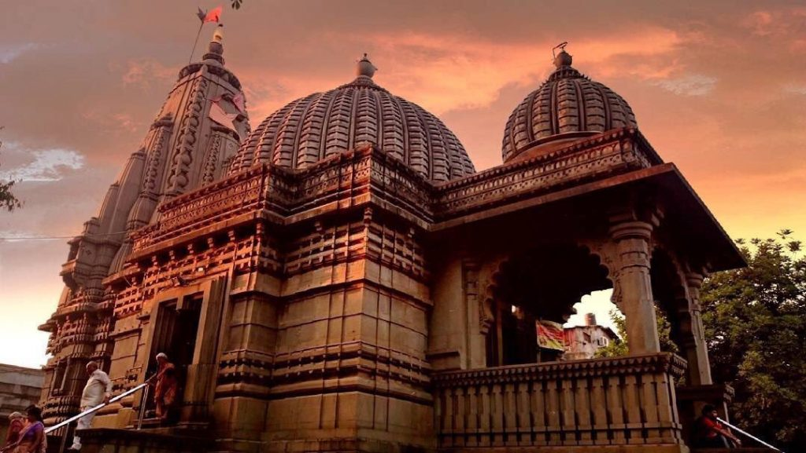
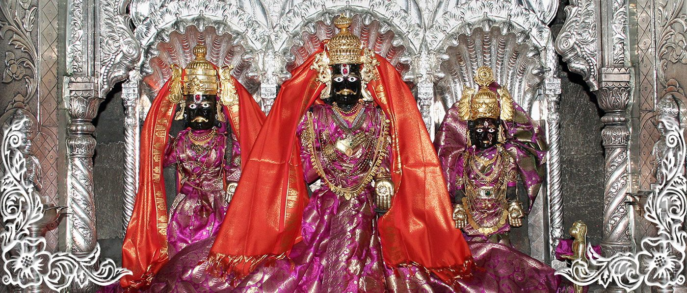
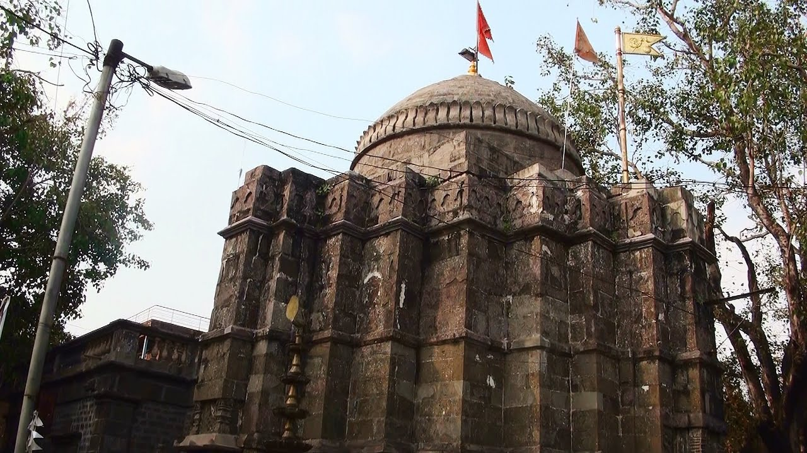
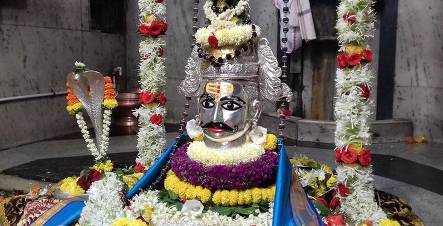
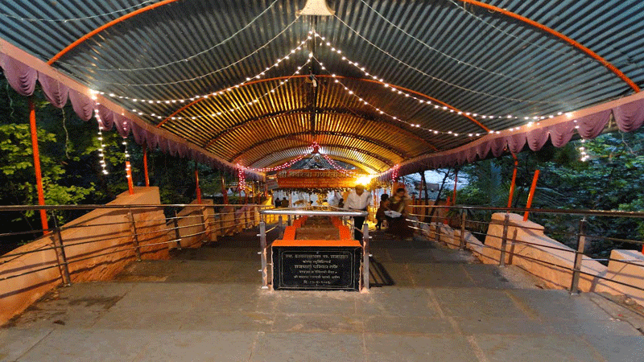
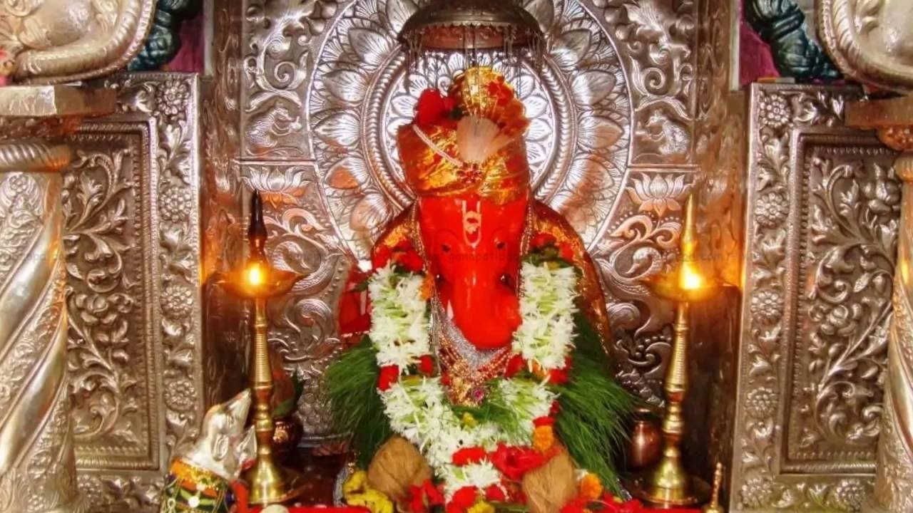

Kalaram Mandir


The Kalaram Temple in Nasik is one of the most beautiful temples in the country. In fact, it probably aces Nasik famous temples list. This old Hindu temple has a substantial role in the religious aspects of Indian history. Kalaram Temple is one of the most revered temples in Maharashtra. It is devoted to Lord Rama and gets its name for the black idol of the god in the premises. It is also dedicated to god Laxman and goddess Sita. The temple is also famous for that fact that outside this temple a massive protest was held by the famous Dr Ambedkar. The temple structure is 70 feet and done up beautifully in black stone consisting of gold-plated peaks. Around 2000 workers, 12 years and 23 lakhs were invested in building up the complete temple. The stones are said to be brought in from the Ramshej mines 200 years ago.
Kapaleshwar Mandir


Among the many old temples in Nasik, this one is the most important one. This temple is extremely important to the Maharashtrians and most of the Indians as well. The temple depicts a story, a mistake made by Lord Shiva. The legend goes that god Shiva had killed a cow by mistake once and for that, he was asked by Nandi to take a holy dip in Ramkund so as cleanse himself of his bad deed. He is said to have come to Nashik and done so, and post which he sat to meditate. The very spot where the temple is located is believed to be where Shiva had meditated at that time. There are many nearby temples dedicated to Lord Ganesha, Gayatri Devi, etc and, for this reason, this spot is an important one according to the local people.
Navshya Ganapati


Ganpati means Lord Ganesha, to whom this temple is dedicated to. This is one of the most famous Ganesha temples in Nasik located at Anandvalli. The temple is located on the banks of River Godavari which allows the visitors and regular worshipers to experience the unique picturesque surrounding of this temple. With a legacy of almost 400 years and built during the Peshvas rule, this temple has immense historical significance too. The idol of Ganesh here is known as ‘Navashya’ – meaning he grants wishes of all seeking him and his blessings at the temple. It is said that lots of devotees have vouched for experiencing their ‘navas’ or offerings being answered by the Ganpati himself.